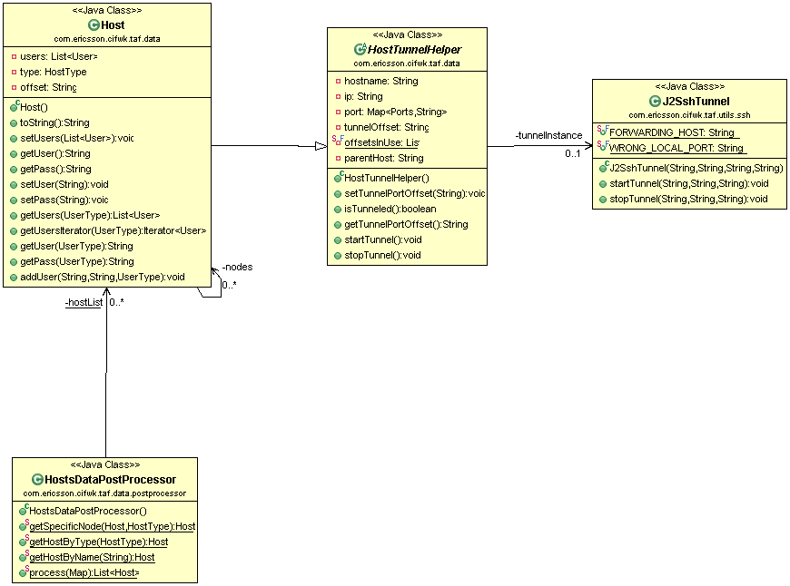

Issue
One of possible TOR configurations is assuming certain services are exposed on IP address not available from external network. To access them SSH tunneling is suggested and TAF is providing support for this solution via Host object.
SSH Tunnel
SSH tunneling or SSH port forwarding allows to access port on server that is not available using another server that can be accessed using SSH.

In case of TOR Configuration the private addresses are used to expose internal services e.g. by specifying them for JBOSS instances. Access to them can be established using SSH local port forwarding:

Enabling
TAF handles SSH tunneling on Host objects during initial creation by HostDataPostProcessor. To enable tunneling "tunnel" property needs to be set to offset assigned to the node:
host.sc1.ip = 10.65.237.137 host.sc1.user.root.pass = rootPass host.sc1.user.root.type = admin host.sc1.node.jbossInstance1.tunnel = 1 host.sc1.node.jbossInstance1.ip = 192.168.113.10 host.sc1.node.jbossInstance1.port.http = 8080
During parsing of the line and creating Host object, startTunnel method will be called automatically and IP and PORT properties of the Host object will be overridden to use SSH forwarding.
Setting tunnel in host.properties file is enough to enabled SSH tunneling in background. There is nothing else to do. |
jbossInstance1 will have port 8080 available on localhost port 18081 (10000 for dynamic range + 8080 to map the port + 1 for tunnel offset) or next available port. For TAF handlers this is all transparent as after getting the Host object ports and IP is overridden:
Host jb1 = DataHandler.getHostByName("jbossInstance1");
assert jb1.getIp() == "127.0.0.1"
assert jb1.getPort().get(Ports.HTTP) == "18081"
To enable SSH tunnel, following things are required:
|
Components

{kind=link}
{kind=link}